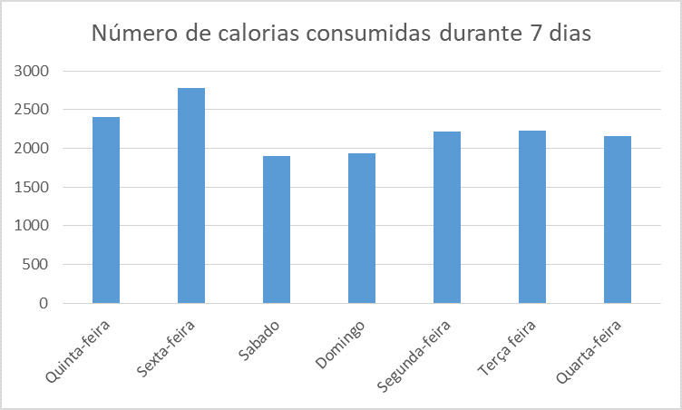

Fala ae rapaziada kaiky aqui falando e criei isso para falar um pouco das calorias que comi em umas semana
Calorias são a unidade de medida utilizada para representar energia na forma de calor, mas não faz parte do Sistema Internacional de unidade.
Basicamente o que farei é contar a quantidade de calorias que eu como durante 7 dias ou uma semana , anotando os alimentos e suas calorias os horários que eu como, anotar as refeições refeições e criar gráficos sobre isso.
Como podemos perceber o número de calorias que como por dia normalmente não passas de 2200 apenas passando na quinta feira que comi coisas com muito mais calorias como parmegiana e Nos restos dos dias tirando o sábado e domingo e quase as mesmas coisas, pois sempre como as mesma quantidade e que como de manhã é sempre o mesmo e no sábado e domingo é um pouco menos que os outros, porque eu acordo tarde perdendo 3 refeições que como nos outros dias.